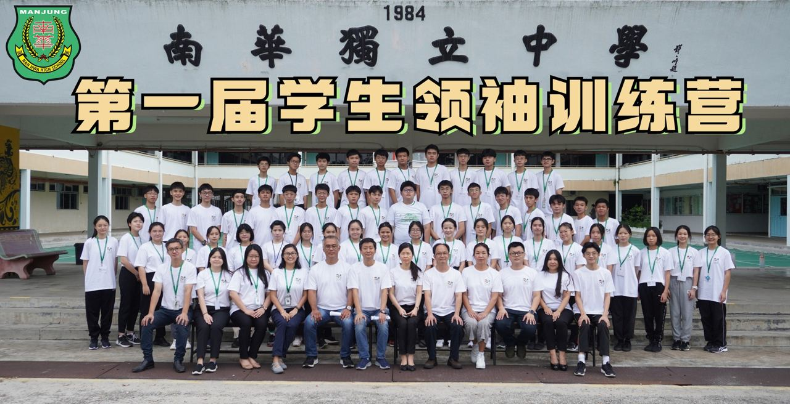
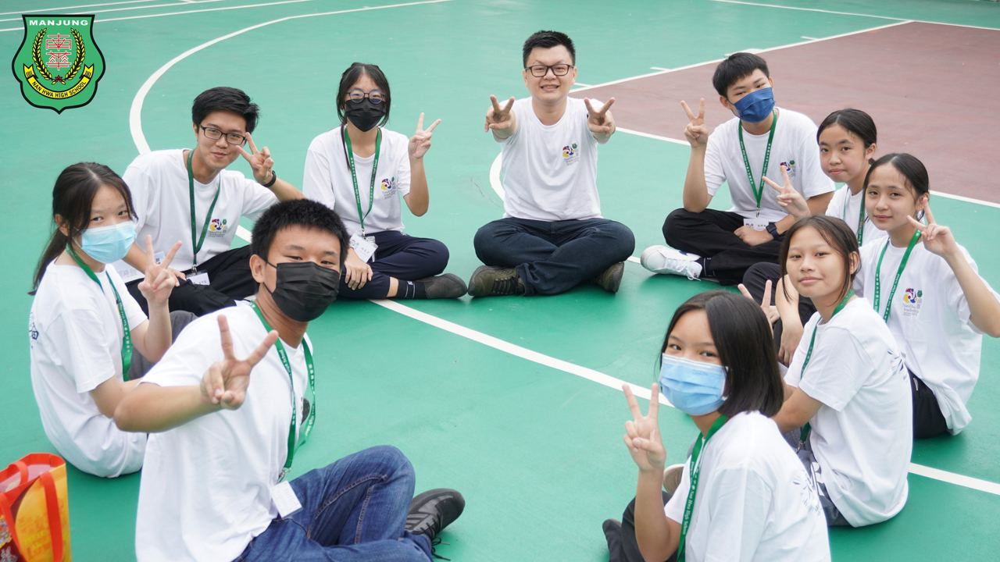
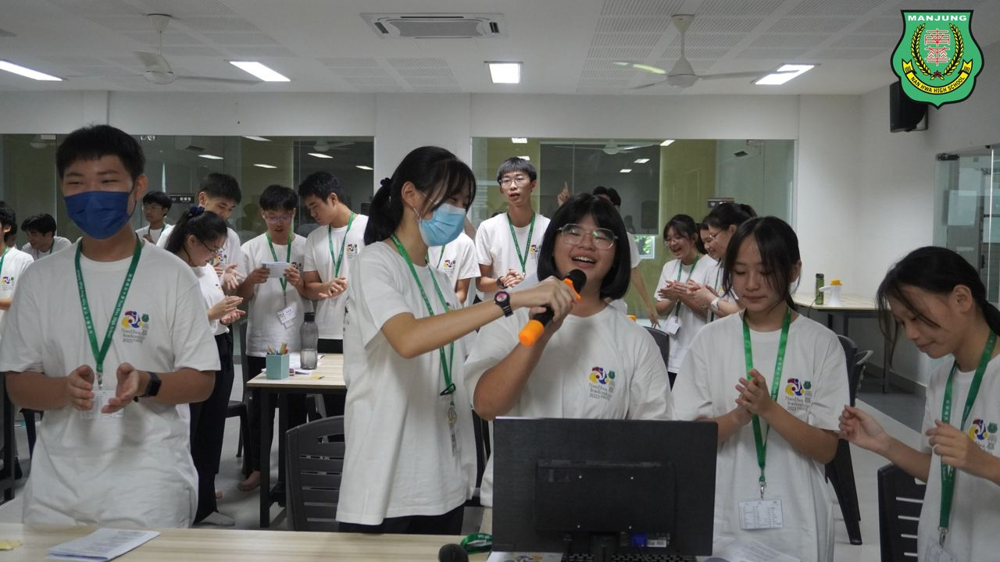
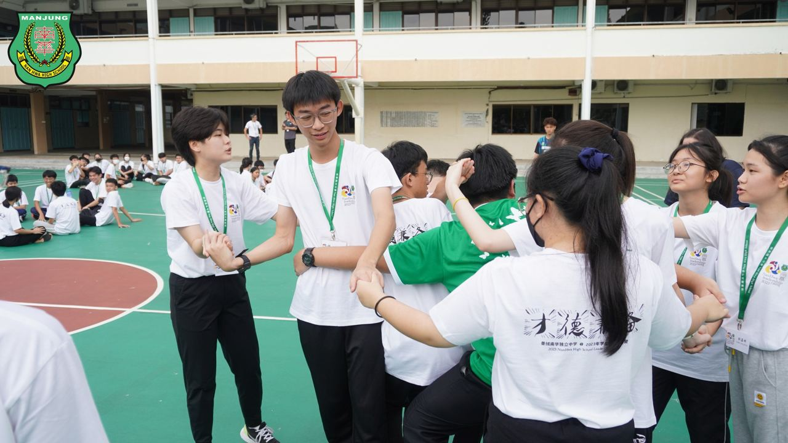
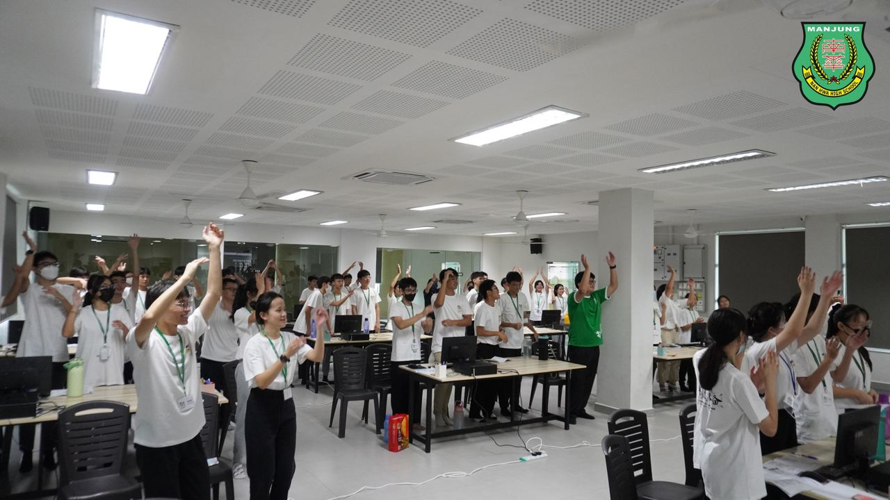
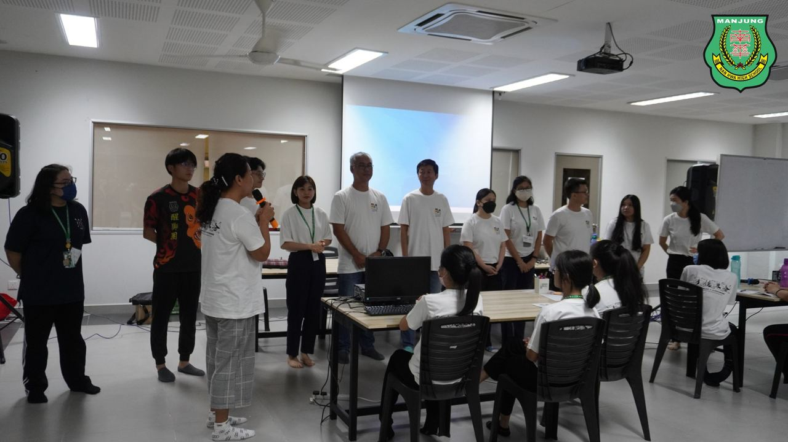
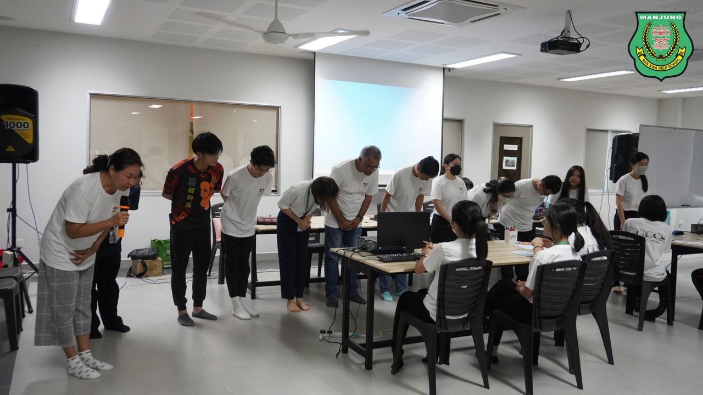
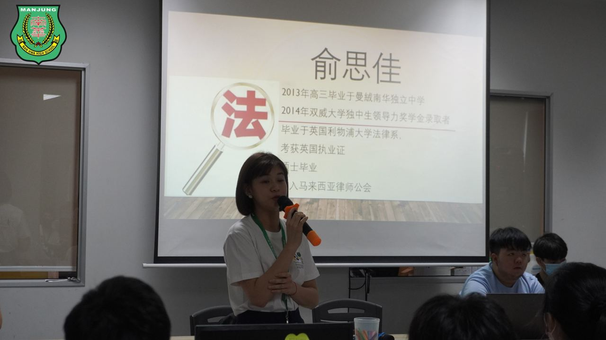

培养才德兼备领袖人才
培养才德兼备领袖人才
南华独中办第一届领袖训练营
为了培养“迎领”21世纪领袖人才、旨在打开学生的格局视野、提升品德素养与组织能力，南华独中于四月底举办2023年第一届学生领袖训练营，主题为“才德兼备”，共有六十位来自各个学会团体正副主席、干部、正副班长等肩负领导职责的学生参加。
由南华独中董事会、校长、行政正副主任及校友担任此训练营导师，为该校六十位未来领袖们准备为期三天两夜的训练营，内容包括有各种主题的讲座，如大局观、领袖之才与德、会议规范、法律条规、口才训练、思维导图等等，另外还有各种团康、闯关游戏、体能训练、电影分享、天使投资人等丰富活动。
南华独中董事长颜登逸兼大局观讲座导师在闭幕仪式时表示，随着21世纪的来临，未来的挑战会愈来愈严峻，然而具备了大局观与高瞻远瞩眼光的领袖会迎难而上，并且无时无刻磨砺自己的能力与高品德素质。颜董事长分享道，如今人工智能的崛起恰好印证了高格局思维与高品德素质的重要性，唯有壮硕强大自身的软硬实力，才不会未来中失去立足之地。
董事总务何添胜兼领袖之才与德讲座导师则表示，自十年前南华独中提出“培养迎领21世纪领袖人才”的办学理念以后，如今终于集天时地利与人和，办成了第一届的学生领袖训练营。主题“才德兼备”更是揭示了才与德对于领袖是缺一不可的特质。才能是领袖的必备条件，而德行则是办事的行为准则，必须双管齐下，共同培养才能成就一名合格的领袖。
校长陈丽冰博士兼口才训练讲座导师在开幕词说道:学生领袖不仅是领先者，更是领导者。两者最大的差异在于“领先者，只要领先于他人就可以称作领先者；领导者，我自身要做好，还要带领他人一起做好。作为一个引领者 ，其主要责任不仅仅是做强自己，还要引领别人，前提是做强自己”以此勉励学生要培养忠诚、以行动践行责任以及宽宏胸襟的领袖素养。
#第一届学生领袖训练营 #才德兼备
#南华独中 #曼绒 #实兆远







